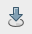

Import a export dat z databáze¶
Nahráváme vlastní data do databáze¶
Správce databází¶
Předpokládáme, že každý uživatel pracuje ve vlastní databázovém schématu. Toto schéma vytvoříme pomocí správce databází v QGISu.
Vytvoření databázového schématu¶
V našem případě uložíme vektorová data do vlastního schématu, nejprve toto schéma vytvoříme .
{kind=link}
Obr. 10 V nově vytvořeném schématu již má uživatel „skoleni“ právo zápisu.¶
Import dat¶
Nahrání geodat do databáze PostGIS umožňuje v QGISu samotný správce databází. Soubor s geodaty anebo načtenou vrstvu v QGISu naimportujeme z menu anebo z nástrojové lišty správce databází .
{kind=link}
V dialogu vybereme soubor pro import do geodatabáze (1). Dále můžeme změnit cílové schéma a název výsledné tabulky v databázi (2). Dialog nabízí další možnosti včetně transformace do jiného souřadnicového systému (pokud je zadán současně zdrojový a cílový souřadnicivový systém) anebo prosté vynucení cílového souřadnicového systému (3).
{kind=link}
Poznámka
Ve níže uvedeném případě importujeme vrstvu veřejných toalet z otevřené datové sady IPR.
Naimportovaná vrstva z geodatabáze PostGIS se nezobrazí automaticky, musíte ji do mapového okna přidat manuálně.
Další možnosti¶
Tip
Více k tomuto tématu ve školení PostGIS pro pokročilé.
shp2pgsql¶
shp2pgsql je konzolový nástroj, který umožňuje import vektorových dat ve formátu Esri Shapefile do geodatabáze PostGIS. Tento nástroj je součástí instalace PostGIS.
Import dat do databáze pomocí shp2pgsql z příkazové řádky
Nejprve vytvoříme SQL dávku
shp2pgsql -s 5514 FSV_VerejnaWC_b.shp skoleni.toalety > wc.sql
-sdefinuje souřadnicový systém (v tomto případě EPSG:5514),FSV_VerejnaWC_b.shpje název vstupního souboru ve formátu Esri Shapefile,landa.toaletyje název výstupního databázového schématu a tabulky (oddělené tečkou),> wc.sqldávka je uložena do souboruwc.sql.
Vytvořenou SQL dávku nahrajeme do databáze gismentors přes
nástroj psql a jeho parametr -f:
psql gismentors -U skoleni -W -h training.gismentors.eu -f wc.sql
ogr2ogr¶
ogr2ogr je konzolový nástroj knihovny GDAL umožňující konverzi mezi datovými formáty podporovanými touto knihovnou.
Import dat do databáze pomocí ogr2ogr z příkazové řádky
ogr2ogr -f PostgreSQL \
PG:"dbname=gismentors host=training.gismentors.eu user=skoleni password=XXX \
active_schema=skoleni" \
FSV_VerejnaWC_b.shp \
-a_srs EPSG:5514
Export dat z databáze¶
Data můžeme exportovat z databáze v prostředí QGIS naprosto stejně jako u jiných formátů. Načteme si do QGIS vrstvu, kterou si přejeme vyexportovat a z kontextového menu nad vrstvou zvolíme volbu Export/Uložit prvky jako.
V následujícím dialogu zvolíme požadovaný výstupní formát a připadně další volby, kterou jsou již závislé na zvoleném formátu.
Obr. 11 Příklad exportu vektorových dat z databáze do formátu OGC GML.¶
Pro pokročilé uživatele¶
Podobně jako v případě importu dat, lze použít pokročilejší konzolové nástroje. Ty je možné volat ve skriptech při automatizaci apod. Ukážeme si použití nástroje pgsql2shp, který umožňuje export dat do formátu Esri Shapefile a ogr2ogr knihovny GDAL.
Tip
Více k tomuto tématu ve školení PostGIS pro pokročilé.
pgsql2shp¶
PostGIS kromě nástroje pro import dat ve formátu Esri Shapefile shp2pgsql nabízí obdobný nástroj pro export dat pgsql2shp.
Export do formátu Esri Shapefile pomocí pgsql2shp z příkazové řádky
V níže uvedeném příkladě vyexportujeme tabulku obce ze schéma ruain do souboru obce.shp.
pgsql2shp -h training.gismentors.eu -u skoleni -P XXX -f obce gismentors \
ruian.obce
ogr2ogr¶
ogr2ogr slouží obecně ke konverzi dat, lze jej tedy použít jak pro import tak export dat.
Export do formátu Esri Shapefile pomocí ogr2ogr z příkazové řádky
ogr2ogr -f 'ESRI Shapefile' \
-lco 'ENCODING=UTF-8' \
obce.shp \
PG:"dbname=gismentors host=training.gismentors.eu user=skoleni password=XXX" \
ruian.obce
Na rozdíl od nástroje pgsql2shp umožňuje ogr2ogr export nejen do formátu Esri Shapefile, ale do celé řady formátů, které knihovna GDAL porpodruje v režimu zápisu.
Export do formátu GML pomocí ogr2ogr z příkazové řádky
ogr2ogr -f 'GML' \
obce.gml \
PG:"dbname=gismentors host=training.gismentors.eu user=skoleni password=XXX" \
ruian.obce_polygon